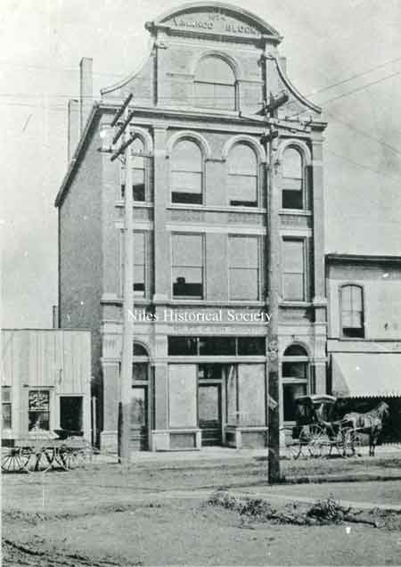
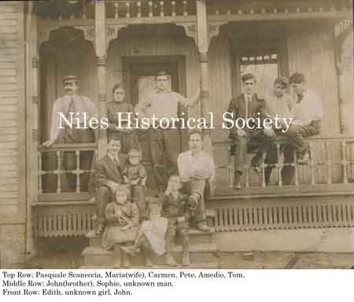
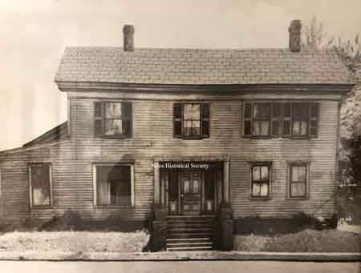
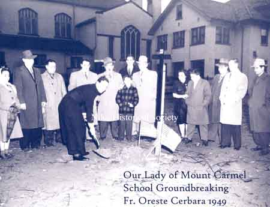
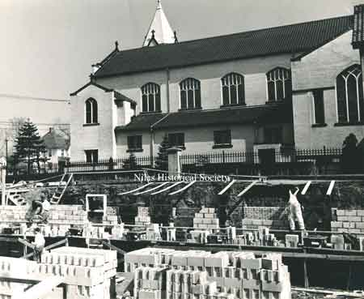
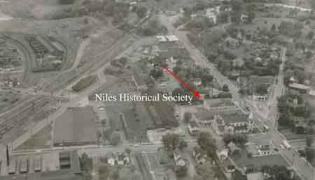
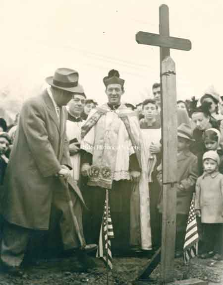
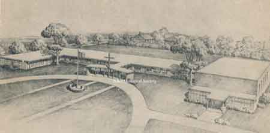
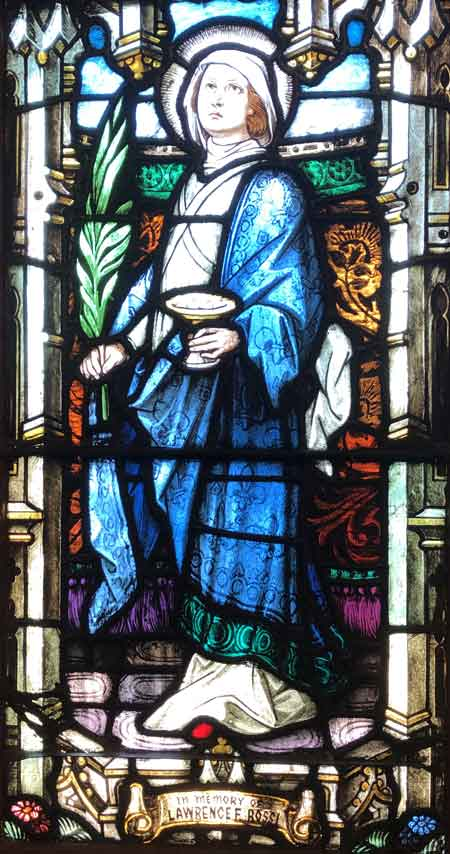
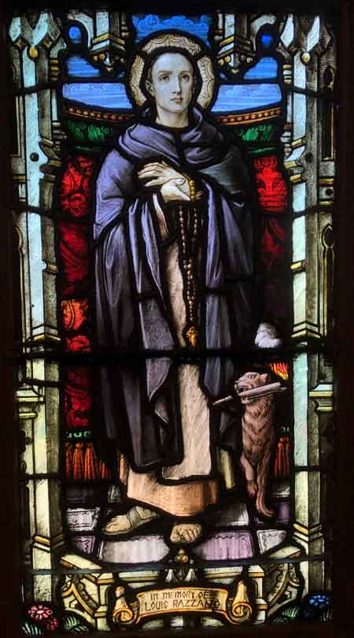

History of Mount Carmel Church in Niles Ohio
{kind=link}
Father Vito Franco
{kind=link}

First meetings were on the second floor
{kind=link}

Pasquale Scarneccia house on Mason Street
{kind=link}

The Robbins home at the corner of Erie Street and Robbins Avenue was purchased in 1908.

Father Nicola Santoro

Groundbreaking for the new basement in November 23,1923.

Unfinished interior of Mount Carmel Church, 1924.

Bell donated by Mr. and Mrs. Vincenzo Mango

The Scarnecchia House at 449 Mason Street was the temporary chapel from 1906-1908.

Mt. Carmel Church with Robbins Home


Father Oreste Cerbara
{kind=link}

School Groundbreaking, Father Oreste Cerbara 1949.
{kind=link}

Mount Carmel School basement construction.

Mount Carmel School was completed September 1949 with a staff of six sisters and 226 students from K-4 grades

Mount Carmel School classroom.
{kind=link}

Aerial view of Robbins Avenue and Erie Street featuring Mount Carmel Church, Mission House, school and convent.

(Front) Sr. M. Donata, Principal, Sr. M. Stella, Sr. M. Celeste

Convent and Chapel on Erie Street.

Float in Mount Carmel procession, 1956.
{kind=link}

Groundbreaking Rhodes Avenue School with Father Cerbara, 1957.
{kind=link}

Architect rendering of proposed Rhodes Avenue School.

Mt. Carmel School on North Rhodes Avenue.

Mt. Carmel Church windows are adorned with stain glass artwork that the families donated.

Mt. Carmel Church windows are adorned with stain glass artwork that the families donated.

Mt. Carmel Church windows are adorned with stain glass artwork that the families donated.
{kind=link}

Mt. Carmel Church windows are adorned with stain glass artwork that the families donated.
{kind=link}
